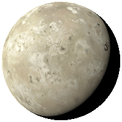

Jupiter's rocky moon Io is the most volcanically active world in the solar system, with hundreds of volcanoes, some erupting lava fountains dozens of miles (or kilometers) high. Io's remarkable activity is the result of a tug-of-war between Jupiter's powerful gravity and smaller but precisely timed pulls from two neighboring moons that orbit farther from Jupiter – Europa and Ganymede.
Discovery and Namesake
Io was discovered on Jan. 8, 1610, by Galileo Galilei. The discovery, along with three other Jovian moons, was the first time a moon was discovered orbiting a planet other than Earth. The discovery of the four Galilean satellites eventually led to the understanding that planets in our solar system orbit the Sun, instead of our solar system revolving around Earth. Galileo apparently had observed Io on Jan. 7, 1610, but had been unable to differentiate between Io and Europa until the next night.
Galileo originally called Jupiter's moons the Medicean planets, after the powerful Italian Medici family and referred to the individual moons numerically as I, II, III, and IV. Galileo's naming system would be used for a couple of centuries.
It wouldn't be until the mid-1800s that the names of the Galilean moons, Io, Europa, Ganymede, and Callisto, would be officially adopted, and only after it became apparent that naming moons by number would be very confusing as new additional moons were being discovered.
In mythology, Io is a mortal woman transformed into a cow during a marital dispute between the Greek god Zeus – Jupiter in Roman mythology – and his wife, Juno. NASA's Juno mission is named in honor of the goddess, who could peer through the clouds and expose her husband's wrongdoings. The spacecraft also peers through clouds to reveal Jupiter's secrets.
Potential for Life
Constant volcanism and intense radiation make life as we know it unlikely on Io.
Size and Distance
A bit larger than Earth's Moon, Io is the third largest of Jupiter's moons, and the fifth one in distance from the planet.
Orbit and Rotation
Although Io always points the same side toward Jupiter in its orbit around the giant planet, the large moons Europa and Ganymede perturb Io's orbit into an irregularly elliptical one. Thus, in its widely varying distances from Jupiter, Io is subjected to tremendous tidal forces.
These forces cause Io's surface to bulge up and down (or in and out) by as much as 330 feet (100 meters). Compare these tides on Io's solid surface to the tides on Earth's oceans. On Earth, in the place where tides are highest, the difference between low and high tides is only 60 feet (18 meters), and this is for water, not solid ground.
Io's orbit, keeping it at more or less a cozy 262,000 miles (422,000 kilometers) from Jupiter, cuts across the planet's powerful magnetic lines of force, thus turning Io into a electric generator. Io can develop 400,000 volts across itself and create an electric current of 3 million amperes. This current takes the path of least resistance along Jupiter's magnetic field lines to the planet's surface, creating lightning in Jupiter's upper atmosphere.
Surface
The tidal forces generate a tremendous amount of heat within Io, keeping much of its subsurface crust in liquid form seeking any available escape route to the surface to relieve the pressure. Thus, the surface of Io is constantly renewing itself, filling in any impact craters with molten lava lakes and spreading smooth new floodplains of liquid rock. The composition of this material is not yet entirely clear, but theories suggest that it is largely molten sulfur and its compounds (which would account for the varied coloring) or silicate rock (which would better account for the apparent temperatures, which may be too hot to be sulfur). Sulfur dioxide is the primary constituent of a thin atmosphere on Io. It has no water to speak of, unlike the other, colder Galilean moons. Data from the Galileo spacecraft indicates that an iron core may form Io's center, thus giving Io its own magnetic field.
Magnetosphere
As Jupiter rotates, it takes its magnetic field around with it, sweeping past Io and stripping off about 1 ton (1,000 kilograms) of Io's material every second. This material becomes ionized in the magnetic field and forms a doughnut-shaped cloud of intense radiation referred to as a plasma torus. Some of the ions are pulled into Jupiter's atmosphere along the magnetic lines of force and create auroras in the planet's upper atmosphere. It is the ions escaping from this torus that inflate Jupiter's magnetosphere to over twice the size we would expect.